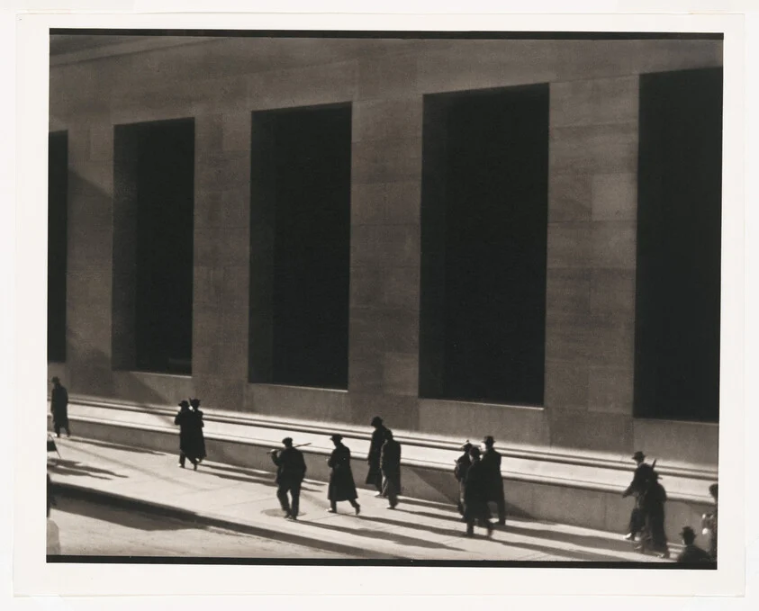

Dark windows hold the beat. Shadows carry the footsteps.
Repeated verticals above; walkers below.
Scale puts the wall and body in tension.
A narrow gamut, led by value contrast.
Brown-grey bridges charcoal and white.
Long shadows connect the walkers.
Bright pavement leads the eye outward.
Layout exercise colours; not sampled from the print.
Platinum palladium print. Negative 1915;
this print dated 1976–1977.[1]
Paul Strand · 1890–1976.
Urban movement, abstraction, portraiture.[3]
Faces fade, but footsteps remain.
Small bodies hold a human scale.
Find repeated openings. Wait for a walker
in the lower band; include the long shadow.
60% paper + 25% brown-grey
+ 15% charcoal; not sampled colours.
Paul Strand · Wall Street, New York
Whitney Museum of American Art · 91.102.2
Copyright: artist and relevant rights holders.
No open licence indicated; follow source permissions.
Appreciation is independent interpretation.
![[2] Source image](https://whitneymedia.org/assets/artwork/7841/91_102_2_cropped.jpg){kind=link}